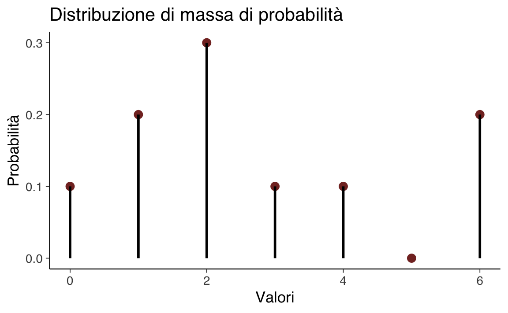

here::here("code", "_common.R") |>
source()
# Load packages
if (!requireNamespace("pacman")) install.packages("pacman")
pacman::p_load(mice)25 Proprietà delle variabili casuali
Prerequisiti
Prima di affrontare il presente capitolo, è essenziale leggere la sezione ?sec-calculus.
Concetti e Competenze Chiave
- Approfondire i concetti di valore atteso e varianza per variabili casuali discrete.
- Acquisire familiarità con le principali proprietà associate al valore atteso e alla varianza.
- Estendere la comprensione di valore atteso e varianza alle variabili casuali continue.
- Utilizzare R per calcolare effettivamente queste metriche.
- Interpretare criticamente i risultati ottenuti dalle analisi.
Preparazione del Notebook
25.1 Introduzione
Sintetizzare la distribuzione di una variabile casuale attraverso indicatori caratteristici è spesso molto utile. Questi indicatori consentono di cogliere le principali proprietà della distribuzione, come la posizione centrale (ovvero il “baricentro”) e la variabilità (ossia la dispersione attorno al centro). In questo modo, è possibile ottenere una descrizione sintetica e significativa della distribuzione di probabilità della variabile casuale.
In questo capitolo, introdurremo i concetti fondamentali di valore atteso e varianza di una variabile casuale, che sono strumenti essenziali per comprendere e riassumere le proprietà di una distribuzione probabilistica.
25.2 Valore Atteso
Quando vogliamo comprendere il comportamento tipico di una variabile casuale, ci interessa spesso determinare il suo “valore tipico”. Tuttavia, questa nozione può essere interpretata in diversi modi:
- Media: La somma dei valori divisa per il numero dei valori.
- Mediana: Il valore centrale della distribuzione, quando i dati sono ordinati in senso crescente o decrescente.
- Moda: Il valore che si verifica con maggiore frequenza.
Ad esempio, per il set di valori \(\{3, 1, 4, 1, 5\}\), la media è \(\frac{3+1+4+1+5}{5} = 2.8\), la mediana è 3, e la moda è 1. Tuttavia, quando ci occupiamo di variabili casuali, anziché di semplici sequenze di numeri, diventa necessario chiarire cosa intendiamo per “valore tipico” in questo contesto. Questo ci porta alla definizione formale del valore atteso.
Definizione 25.1 Sia \(X\) una variabile casuale discreta che assume i valori \(x_1, \dots, x_n\) con probabilità \(P(X = x_i) = p(x_i)\). Il valore atteso di \(X\), denotato con \(\mathbb{E}(X)\), è definito come:
\[ \mathbb{E}(X) = \sum_{i=1}^n x_i \cdot p(x_i). \]
In altre parole, il valore atteso (noto anche come speranza matematica o aspettazione) di una variabile casuale è la somma di tutti i valori che la variabile può assumere, ciascuno ponderato dalla probabilità con cui esso si verifica.
Esempio 25.1 Calcoliamo il valore atteso della variabile casuale \(X\) corrispondente al lancio di una moneta equilibrata, dove testa corrisponde a \(X = 1\) e croce corrisponde a \(X = 0\):
\[ \mathbb{E}(X) = \sum_{i=1}^{2} x_i \cdot P(x_i) = 0 \cdot \frac{1}{2} + 1 \cdot \frac{1}{2} = 0.5. \]
Esempio 25.2 Calcoliamo il valore atteso della variabile casuale \(X\) che rappresenta la somma dei punti ottenuti dal lancio di due dadi equilibrati a sei facce.
Come abbiamo visto nel ?sec-prob-intro-random-var, \(X\) può assumere i valori [2, 3, 4, 5, 6, 7, 8, 9, 10, 11, 12] con una distribuzione di massa di probabilità pari a [1/36, 2/36, 3/36, 4/36, 5/36, 6/36, 5/36, 4/36, 3/36, 2/36, 1/36]. Applicando la formula del valore atteso, otteniamo:
\[ \mathbb{E}(X) = \sum_{i=1}^{11} x_i \cdot P(x_i) = 2 \cdot \frac{1}{36} + 3 \cdot \frac{2}{36} + \dots + 12 \cdot \frac{1}{36} = 7.0. \]
Esempio 25.3 Vediamo ora come eseguire i calcoli del valore atteso utilizzando R. Per prima cosa, definiamo i valori della variabile casuale:
x <- 2:12
x
#> [1] 2 3 4 5 6 7 8 9 10 11 12Successivamente, calcoliamo la distribuzione di massa della variabile casuale.
# Definire il range dei valori dei dadi
r <- 1:6
sample <- expand.grid(i = r, j = r) # Tutte le combinazioni dei valori dei due dadi
# Calcolare la distribuzione di probabilità
px <- numeric()
for (sum_value in 2:12) {
event <- subset(sample, i + j == sum_value) # Filtra le combinazioni che sommano a 'sum_value'
px <- c(px, nrow(event) / nrow(sample)) # Calcola la probabilità
}
px
#> [1] 0.02777778 0.05555556 0.08333333 0.11111111 0.13888889 0.16666667
#> [7] 0.13888889 0.11111111 0.08333333 0.05555556 0.02777778Ora, possiamo calcolare il valore atteso di \(X\) utilizzando la formula del valore atteso per variabili casuali discrete:
ex <- sum(x * px)
round(ex, 3)
#> [1] 7In alternativa, possiamo utilizzare un approccio più diretto utilizzando le funzioni per la definizione di distribuzioni discrete in R. In questo caso, definiamo manualmente la distribuzione:
x <- 2:12
px <- c(1/36, 2/36, 3/36, 4/36, 5/36, 6/36, 5/36, 4/36, 3/36, 2/36, 1/36)
# Calcoliamo il valore atteso direttamente:
x_ev <- sum(x * px)
round(x_ev, 3)
#> [1] 7Questi metodi dimostrano come sia possibile calcolare il valore atteso di una variabile casuale sia attraverso un approccio diretto, sia utilizzando R.
25.2.1 Interpretazione
Il valore atteso di una variabile casuale corrisponde alla media aritmetica di un ampio numero di realizzazioni indipendenti della variabile stessa.
Per chiarire questo concetto, consideriamo nuovamente l’esempio del lancio di due dadi bilanciati a sei facce, dove la variabile casuale \(X\) rappresenta la “somma dei due dadi”. Per interpretare il valore atteso, possiamo simulare un grande numero di realizzazioni indipendenti di \(X\) utilizzando la funzione np.random.choice() della libreria NumPy. Questa funzione permette di generare campioni casuali basati sui valori della variabile casuale, sul numero di ripetizioni indipendenti (qui 1.000.000) e sulla distribuzione di massa di probabilità associata:
set.seed(123) # Per rendere i risultati riproducibili
x_samples <- sample(x, size = 1e6, replace = TRUE, prob = px)L’istruzione sample(x, size = 1e6, replace = TRUE, prob = px)) utilizza R per generare un array di 1.000.000 di elementi (specificato dal parametro size), selezionati casualmente dall’array x secondo le probabilità specificate nell’array px.
Quando il numero di realizzazioni indipendenti è sufficientemente grande, la media aritmetica dei campioni generati si avvicina al valore atteso della variabile casuale:
mean(x_samples) |>
round(3)
#> [1] 6.998Questo risultato conferma che, con un numero elevato di simulazioni, la media aritmetica dei valori ottenuti fornisce una buona approssimazione del valore atteso teorico di \(X\).
25.2.2 Proprietà del Valore Atteso
Una delle proprietà più importanti del valore atteso è la sua linearità: il valore atteso della somma di due variabili casuali è uguale alla somma dei loro rispettivi valori attesi:
\[ \mathbb{E}(X + Y) = \mathbb{E}(X) + \mathbb{E}(Y). \tag{25.1}\]
Questa proprietà, espressa dalla formula sopra, è intuitiva quando \(X\) e \(Y\) sono variabili casuali indipendenti, ma è valida anche nel caso in cui \(X\) e \(Y\) siano correlate.
Inoltre, se moltiplichiamo una variabile casuale per una costante \(c\), il valore atteso del prodotto è uguale alla costante moltiplicata per il valore atteso della variabile casuale:
\[ \mathbb{E}(cY) = c \mathbb{E}(Y). \tag{25.2}\]
Questa proprietà ci dice che una costante può essere “estratta” dall’operatore di valore atteso, e si applica a qualunque numero di variabili casuali.
Un’altra proprietà significativa riguarda il prodotto di variabili casuali indipendenti. Se \(X\) e \(Y\) sono indipendenti, allora il valore atteso del loro prodotto è uguale al prodotto dei loro valori attesi:
\[ \mathbb{E}(XY) = \mathbb{E}(X) \mathbb{E}(Y). \tag{25.3}\]
Infine, consideriamo la media aritmetica \(\bar{X} = \frac{X_1 + \ldots + X_n}{n}\) di \(n\) variabili casuali indipendenti con la stessa distribuzione e con valore atteso \(\mu\). Il valore atteso della media aritmetica è:
\[ \mathbb{E}(\bar{X}) = \frac{1}{n} \left(\mathbb{E}(X_1) + \dots + \mathbb{E}(X_n)\right) = \frac{1}{n} \cdot n \cdot \mathbb{E}(X) = \mu. \]
Questo risultato conferma che la media aritmetica di un campione di variabili casuali indipendenti ha lo stesso valore atteso della distribuzione originaria, rendendo il valore atteso uno strumento cruciale per l’analisi statistica e probabilistica.
Esempio 25.4 Consideriamo il seguente esperimento casuale. Sia \(Y\) il numero che si ottiene dal lancio di un dado equilibrato a sei facce e \(Y\) il numero di teste prodotto dal lancio di una moneta equilibrata (0 oppure 1). Troviamo il valore atteso di \(X+Y\).
Per risolvere il problema iniziamo a costruire lo spazio campione dell’esperimento casuale.
| \(x /\ y\) | 1 | 2 | 3 | 4 | 5 | 6 |
|---|---|---|---|---|---|---|
| 0 | (0, 1) | (0, 2) | (0, 3) | (0, 4) | (0, 5) | (0, 6) |
| 1 | (1, 1) | (1, 2) | (1, 3) | (1, 4) | (1, 5) | (1, 6) |
ovvero
| \(x /\ y\) | 1 | 2 | 3 | 4 | 5 | 6 |
|---|---|---|---|---|---|---|
| 0 | 1 | 2 | 3 | 4 | 5 | 6 |
| 1 | 2 | 3 | 4 | 5 | 6 | 7 |
Il risultato del lancio del dado è indipendente dal risultato del lancio della moneta. Pertanto, ciascun evento elementare dello spazio campione avrà la stessa probabilità di verificarsi, ovvero \(P(\omega) = \frac{1}{12}\). Il valore atteso di \(X+Y\) è dunque uguale a:
\[ \mathbb{E}(X+Y) = 1 \cdot \frac{1}{12} + 2 \cdot \frac{1}{12} + \dots + 7 \cdot \frac{1}{12} = 4.0. \]
Si ottiene lo stesso risultato usando l’Equazione 25.1:
\[ \mathbb{E}(X+Y) = \mathbb{E}(X) + E(Y) = 3.5 + 0.5 = 4.0. \]
Esempio 25.5 Svolgiamo ora l’esercizio in R
coin <- 0:1 # Valori della moneta: testa (0) e croce (1)
die <- 1:6 # Valori del dado: da 1 a 6
# Creazione del campione come combinazione di valori (moneta, dado)
sample <- expand.grid(coin = coin, die = die)
print(sample)
#> coin die
#> 1 0 1
#> 2 1 1
#> 3 0 2
#> 4 1 2
#> 5 0 3
#> 6 1 3
#> 7 0 4
#> 8 1 4
#> 9 0 5
#> 10 1 5
#> 11 0 6
#> 12 1 6px <- numeric() # Vettore per memorizzare le probabilità
for (i in 1:7) {
# Filtrare le combinazioni in cui la somma è uguale a 'i'
event <- subset(sample, coin + die == i)
# Calcolare la probabilità
prob <- nrow(event) / nrow(sample)
px <- c(px, prob)
# Stampare la probabilità
cat(sprintf("P(X + Y = %d) = %d / %d\n", i, nrow(event), nrow(sample)))
}
#> P(X + Y = 1) = 1 / 12
#> P(X + Y = 2) = 2 / 12
#> P(X + Y = 3) = 2 / 12
#> P(X + Y = 4) = 2 / 12
#> P(X + Y = 5) = 2 / 12
#> P(X + Y = 6) = 2 / 12
#> P(X + Y = 7) = 1 / 12x <- 1:7 # Valori della variabile casuale (somma di moneta e dado)
expected_value <- sum(x * px)
expected_value
#> [1] 4Esempio 25.6 Consideriamo le variabili casuali \(X\) e \(Y\) definite nel caso del lancio di tre monete equilibrate, dove \(X\) conta il numero delle teste nei tre lanci e \(Y\) conta il numero delle teste al primo lancio. Si calcoli il valore atteso di \(Z = X \cdot Y\).
La distribuzione di probabilità congiunta \(P(X, Y)\) è fornita nella tabella seguente.
| \(x /\ y\) | 0 | 1 | \(p(Y)\) |
|---|---|---|---|
| 0 | 1/8 | 0 | 1/8 |
| 1 | 2/8 | 1/8 | 3/8 |
| 2 | 1/8 | 2/8 | 3/8 |
| 3 | 0 | 1/8 | 1/8 |
| \(p(y)\) | 4/8 | 4/8 | 1.0 |
Il calcolo del valore atteso di \(XY\) si riduce a
\[ \mathbb{E}(Z) = 1 \cdot \frac{1}{8} + 2 \cdot \frac{2}{8} + 3 \cdot \frac{1}{8} = 1.0. \]
Si noti che le variabili casuali \(Y\) e \(Y\) non sono indipendenti. Dunque non possiamo usare l’Equazione 25.3. Infatti, il valore atteso di \(X\) è
\[ \mathbb{E}(X) = 1 \cdot \frac{3}{8} + 2 \cdot \frac{3}{8} + 3 \cdot \frac{1}{8} = 1.5 \]
e il valore atteso di \(Y\) è
\[ \mathbb{E}(Y) = 0 \cdot \frac{4}{8} + 1 \cdot \frac{4}{8} = 0.5. \]
Perciò
\[ 1.5 \cdot 0.5 \neq 1.0. \]
25.2.3 Variabili casuali continue
Nel caso di una variabile casuale continua \(X\), il valore atteso è definito come:
\[ \mathbb{E}(X) = \int_{-\infty}^{+\infty} x \cdot p(x) \, \mathrm{d}x. \]
Anche in questo contesto, il valore atteso rappresenta una media ponderata dei valori di \(x\), dove ogni possibile valore di \(x\) è ponderato in base alla densità di probabilità \(p(x)\).
L’integrale può essere interpretato analogamente a una somma continua, in cui \(x\) rappresenta la posizione delle barre infinitamente strette di un istogramma, e \(p(x)\) rappresenta l’altezza di tali barre. La notazione \(\int_{-\infty}^{+\infty}\) indica che si sta sommando il contributo di ogni valore possibile di \(x\) lungo l’intero asse reale.
Questa interpretazione rende chiaro come l’integrale calcoli una somma ponderata che si estende su tutti i possibili valori di \(x\), fornendo una misura centrale della distribuzione della variabile casuale continua. Per ulteriori dettagli sulla notazione dell’integrale, si veda l’?sec-calculus.
25.2.3.1 Moda
Un’altra misura di tendenza centrale delle variabili casuali continue è la moda. La moda di \(Y\) individua il valore \(y\) più plausibile, ovvero il valore \(y\) che massimizza la funzione di densità \(p(y)\):
\[ Mo(Y) = \text{argmax}_y p(y). \tag{25.4}\]
Nota
La notazione \(\text{argmax}_y p(y)\) significa: il valore \(y\) tale per cui la funzione \(p(y)\) assume il suo valore massimo.
25.3 Varianza
Dopo il valore atteso, la seconda proprietà più importante di una variabile casuale è la varianza.
Definizione 25.2 Se \(X\) è una variabile casuale discreta con distribuzione \(p(x)\), la varianza di \(X\), denotata con \(\mathbb{V}(X)\), è definita come:
\[ \mathbb{V}(X) = \mathbb{E}\Big[\big(X - \mathbb{E}(X)\big)^2\Big]. \tag{25.5}\]
In altre parole, la varianza misura la deviazione media quadratica dei valori della variabile rispetto alla sua media. Se denotiamo il valore atteso di \(X\) con \(\mu = \mathbb{E}(X)\), la varianza \(\mathbb{V}(X)\) diventa il valore atteso di \((X - \mu)^2\).
25.3.1 Interpretazione della Varianza
La varianza rappresenta una misura della “dispersione” dei valori di \(X\) intorno al suo valore atteso. Quando calcoliamo la varianza, stiamo effettivamente misurando quanto i valori di \(X\) tendono a differire dalla media \(\mu\).
Per capire meglio, consideriamo la variabile casuale \(X - \mathbb{E}(X)\), detta scarto o deviazione dalla media. Questa variabile rappresenta le “distanze” tra i valori di \(X\) e il valore atteso \(\mathbb{E}(X)\). Tuttavia, poiché lo scarto può essere positivo o negativo, la media dello scarto è sempre zero, il che lo rende inadatto a quantificare la dispersione.
Per risolvere questo problema, eleviamo al quadrato gli scarti, ottenendo \((X - \mathbb{E}(X))^2\), che rende tutte le deviazioni positive. La varianza è quindi la media di questi scarti al quadrato, fornendo una misura efficace della dispersione complessiva dei valori di \(X\) rispetto alla sua media.
Questo concetto è fondamentale per comprendere la variabilità di una distribuzione e per applicare strumenti statistici che richiedono una conoscenza approfondita della distribuzione dei dati.
Esempio 25.7 Posta \(S\) uguale alla somma dei punti ottenuti nel lancio di due dadi equilibrati, si calcoli la varianza di \(S\).
La variabile casuale \(S\) ha la seguente distribuzione di probabilità:
| \(s\) | 2 | 3 | 4 | 5 | 6 | 7 | 8 | 9 | 10 | 11 | 12 |
|---|---|---|---|---|---|---|---|---|---|---|---|
| \(P(S = s)\) | \(\frac{1}{36}\) | \(\frac{2}{36}\) | \(\frac{3}{36}\) | \(\frac{4}{36}\) | \(\frac{5}{36}\) | \(\frac{6}{36}\) | \(\frac{5}{36}\) | \(\frac{4}{36}\) | \(\frac{3}{36}\) | \(\frac{2}{36}\) | \(\frac{1}{36}\) |
Essendo \(\mathbb{E}(S) = 7\), la varianza diventa
\[ \begin{align} \mathbb{V}(S) &= \sum \left(s - \mathbb{E}(S)\right)^2 \cdot P(s) \notag\\ &= (2 - 7)^2 \cdot \frac{1}{36} + (3-7)^2 \cdot \frac{3}{36} + \dots + (12 - 7)^2 \cdot \frac{1}{36} \notag\\ &= 5.8333.\notag \end{align} \]
Esempio 25.8 Svolgiamo l’esercizio in R
# Definire i valori di x e le loro probabilità px
x <- 2:12
px <- c(
1 / 36, 2 / 36, 3 / 36, 4 / 36, 5 / 36, 6 / 36,
5 / 36, 4 / 36, 3 / 36, 2 / 36, 1 / 36
)
# Calcolare il valore atteso
ex <- sum(x * px)
ex
#> [1] 7Applichiamo l’Equazione 25.5:
# Calcolo della varianza utilizzando la definizione
variance <- sum((x - ex)^2 * px)
variance
#> [1] 5.833333Usiamo la funzione var() di rv_discrete:
# Calcolo della varianza con pesi
variance_check <- weighted.mean((x - ex)^2, w = px)
variance_check
#> [1] 5.83333325.3.2 Formula Alternativa per la Varianza
Esiste un metodo più semplice e diretto per calcolare la varianza di una variabile casuale \(X\):
\[ \begin{align} \mathbb{E}\Big[\big(X - \mathbb{E}(X)\big)^2\Big] &= \mathbb{E}\big(X^2 - 2Y\mathbb{E}(X) + \mathbb{E}(X)^2\big) \notag\\ &= \mathbb{E}(X^2) - 2\mathbb{E}(Y)\mathbb{E}(X) + \mathbb{E}(X)^2, \end{align} \]
dove \(\mathbb{E}(X)\) è una costante. Semplificando ulteriormente, otteniamo:
\[ \mathbb{V}(X) = \mathbb{E}(X^2) - \big(\mathbb{E}(X)\big)^2. \tag{25.6}\]
In altre parole, la varianza è data dalla differenza tra la media dei quadrati dei valori di \(X\) e il quadrato della media di \(X\).
Questa formula è utile perché permette di calcolare la varianza senza dover prima determinare lo scarto quadratico medio per ciascun valore di \(X\). Invece, si può calcolare direttamente la media dei quadrati e sottrarre il quadrato della media, il che spesso semplifica i calcoli e riduce il rischio di errori.
Esempio 25.9 Consideriamo la variabile casuale \(X\) che corrisponde al numero di teste che si osservano nel lancio di una moneta truccata con probabilità di testa uguale a 0.8. Si trovi la varianza di \(Y\).
Il valore atteso di \(X\) è
\[ \mathbb{E}(X) = 0 \cdot 0.2 + 1 \cdot 0.8 = 0.8. \]
Usando la formula tradizionale della varianza otteniamo:
\[ \mathbb{V}(X) = (0 - 0.8)^2 \cdot 0.2 + (1 - 0.8)^2 \cdot 0.8 = 0.16. \]
Lo stesso risultato si trova con la formula alternativa della varianza. Il valore atteso di \(X^2\) è
\[ \mathbb{E}(X^2) = 0^2 \cdot 0.2 + 1^2 \cdot 0.8 = 0.8. \]
e la varianza diventa
\[ \mathbb{V}(X) = \mathbb{E}(X^2) - \big(\mathbb{E}(Y) \big)^2 = 0.8 - 0.8^2 = 0.16. \]
Esempio 25.10 Svolgiamo l’esercizio in R:
# Definire i valori di x e le probabilità px
x <- c(0, 1)
px <- c(0.2, 0.8)
# Calcolare il risultato
result <- sum(x^2 * px) - (sum(x * px))^2
result
#> [1] 0.1625.3.3 Proprietà
Segno della varianza. La varianza di una variabile aleatoria non è mai negativa, ed è zero solamente quando la variabile assume un solo valore.
Invarianza per traslazione. La varianza è invariante per traslazione, che lascia fisse le distanze dalla media, e cambia quadraticamente per riscalamento:
\[ \mathbb{V}(a + bX) = b^2\mathbb{V}(X). \]
Dimostrazione. Iniziamo a scrivere
\[ (aX+b)-{\mathbb{E}}[aX+b]=aX+b-a{\mathbb{E}}[X]-b=a(X-{\mathbb {E}}[X]). \]
Quindi
\[ \sigma _{{aX+b}}^{2}={\mathbb{E}}[a^{2}(X-{\mathbb {E}}[X])^{2}]=a^{2}\sigma _{X}^{2}. \]
Esaminiamo una dimostrazione numerica.
# Definire i valori di x
x <- c(2, 1, 4, 7)
# Calcolare y
y <- 100 + 2 * x
# Verificare la relazione tra le varianze
result <- var(y) == 2^2 * var(x)
result
#> [1] TRUEVarianza della somma di due variabili indipendenti. La varianza della somma di due variabili indipendenti o anche solo incorrelate è pari alla somma delle loro varianze:
\[ \mathbb{V}(X+Y) = \mathbb{V}(X) + \mathbb{V}(Y). \]
Dimostrazione. Se \(\mathbb{E}(X) = \mathbb{E}(Y) = 0\), allora \(\mathbb{E}(X+Y) = 0\) e
\[\mathbb{V}(X+Y) = \mathbb{E}((X+Y)^2) = \mathbb{E}(X^2) + 2 \mathbb{E}(XY) + \mathbb{E}(Y^2).\]
Siccome le variabili sono indipendenti risulta \(\mathbb{E}(XY) = \mathbb{E}(X)\mathbb{E}(Y) = 0\).
Varianza della differenza di due variabili indipendenti. La varianza della differenza di due variabili indipendenti è pari alla somma delle loro varianze:
\[ \mathbb{V}(X-Y) = \mathbb{V}(X) + \mathbb{V}(Y). \]
Dimostrazione.
\[ \mathbb{V}(X-Y) = \mathbb{V}(X +(-Y)) = \mathbb{V}(X) + \mathbb{V}(-Y) = \mathbb{V}(X) + \mathbb{V}(Y). \]
Varianza della somma di due variabili non indipendenti. Se \(X\) e \(Y\) non sono indipendenti, la formula viene corretta dalla loro covarianza:
\[ \mathbb{V}(X+Y) = \mathbb{V}(X) + \mathbb{V}(Y) + 2 Cov(X,Y), \]
dove \(Cov(X,Y) = \mathbb{E}(XY) - \mathbb{E}(X)\mathbb{E}(Y)\).
Una dimostrazione numerica di questo principio è fornita sotto.
# Definire i valori di x e y
x <- c(2, 1, 4, 7)
y <- c(1, 3, 5, 11)
# Calcolare la varianza di x + y con ddof = 0
var_x_y <- mean((x + y - mean(x + y))^2)
var_x_y
#> [1] 35.25# Definire i valori di x e y
x <- c(2, 1, 4, 7)
y <- c(1, 3, 5, 11)
# Calcolo della varianza combinata
result <- mean((x - mean(x))^2) +
mean((y - mean(y))^2) +
2 * cov(x, y) * (length(x) - 1) / length(x)
result
#> [1] 35.25Varianza della media di variabili indipendenti. La media aritmetica \(\textstyle {\bar {X}}={\frac {X_{1}+\ldots +X_{n}}{n}}\) di \(n\) variabili casuali indipendenti aventi la medesima distribuzione, ha varianza
\[ \mathbb{V}(\bar{X}) = \frac{1}{n^2} \mathbb{V}(X_1)+ \dots \mathbb{V}(X_n) = \frac{1}{n^2} n \mathbb{V}(X) = \frac{1}{n} \mathbb{V}(X). \]
Il principio precedente è illustrato dalla seguente simulazione.
# Creare la popolazione
set.seed(123) # Per riproducibilità
population <- rnorm(10000, mean = 50, sd = 10)
# Definire dimensione del campione e numero di campioni
sample_size <- 30
num_samples <- 100000
# Creare un vettore per memorizzare le medie campionarie
sample_means <- numeric(num_samples)
# Generare i campioni e calcolare le medie
for (i in 1:num_samples) {
sample <- sample(population, size = sample_size, replace = TRUE)
sample_means[i] <- mean(sample)
}
# Calcolare la varianza delle medie campionarie
sampling_dist_mean_var <- var(sample_means) * ((num_samples - 1) / num_samples) # ddof = 0
sampling_dist_mean_var
#> [1] 3.330581Il valore teorico della varianza della distribuzione campionaria della media è
10^2 / 30
#> [1] 3.33333325.3.4 Variabili casuali continue
Per una variabile casuale continua \(X\), la varianza è definita come:
\[ \mathbb{V}(X) = \int_{-\infty}^{+\infty} \large[x - \mathbb{E}(X)\large]^2 p(x) \,\operatorname {d}\!x. \tag{25.7}\]
Analogamente al caso discreto, la varianza di una variabile casuale continua \(X\) una misura della dispersione, ovvero la “distanza” media quadratica attesa dei valori \(x\) rispetto alla loro media \(\mathbb{E}(X)\). In altre parole, la varianza quantifica quanto i valori della variabile casuale si discostano tipicamente dal loro valore medio.
25.4 Deviazione Standard
Quando si lavora con le varianze, i valori sono elevati al quadrato, il che può rendere i numeri significativamente più grandi (o più piccoli) rispetto ai dati originali. Per riportare questi valori all’unità di misura della scala originale, si prende la radice quadrata della varianza. Il risultato ottenuto è chiamato deviazione standard ed è comunemente indicato con la lettera greca \(\sigma\).
Definizione 25.3 La deviazione standard, o scarto quadratico medio, è definita come la radice quadrata della varianza:
\[ \sigma_X = \sqrt{\mathbb{V}(X)}. \]
Come nella statistica descrittiva, la deviazione standard di una variabile casuale fornisce una misura della dispersione, ossia la “distanza” tipica o prevista dei valori \(x\) rispetto alla loro media.
Esempio 25.11 Per i dadi equilibrati dell’esempio precedente, la deviazione standard della variabile casuale \(S\) è pari a \(\sqrt{5.833} = 2.415\). Questo valore indica quanto i risultati della somma dei due dadi tendono a variare attorno alla loro media.
25.5 Standardizzazione
Definizione 25.4 Data una variabile casuale \(X\), si dice variabile standardizzata di \(X\) l’espressione
\[ Z = \frac{X - \mathbb{E}(X)}{\sigma_X}. \tag{25.8}\]
Solitamente, una variabile standardizzata viene denotata con la lettera \(Z\).
25.6 Il Teorema di Chebyshev
Il Teorema di Chebyshev ci permette di stimare la probabilità che una variabile aleatoria si discosti dal suo valore atteso (media) di una certa quantità. In altre parole, ci fornisce un limite superiore alla probabilità che una variabile aleatoria assuma valori “estremi”.
Il teorema di Chebyshev afferma che, per qualsiasi variabile aleatoria X con media E(X) e varianza Var(X), e per qualsiasi numero reale k > 0, si ha:
\[ P(|X - E(X)| ≥ kσ) ≤ 1/k^2, \]
dove:
- P(|X - E(X)| ≥ kσ) è la probabilità che lo scarto assoluto tra X e la sua media sia maggiore o uguale a k volte la deviazione standard (σ).
- σ è la radice quadrata della varianza, ovvero la deviazione standard.
Cosa ci dice questo teorema?
- Limite superiore: Il teorema ci fornisce un limite superiore alla probabilità che una variabile aleatoria si discosti dalla sua media di più di k deviazioni standard.
- Qualsiasi distribuzione: La bellezza di questo teorema è che vale per qualsiasi distribuzione di probabilità, a patto che la media e la varianza esistano.
- Utilizzo: Il teorema di Chebyshev è molto utile quando non conosciamo la distribuzione esatta di una variabile aleatoria, ma conosciamo la sua media e la sua varianza.
In sintesi, il teorema di Chebyshev ci fornisce un limite superiore alla probabilità che una variabile aleatoria si discosti dalla sua media di una certa quantità, in base alla sua varianza. Il teorema di Chebyshev ci permette quindi di fare inferenze sulla distribuzione di una variabile aleatoria anche quando abbiamo informazioni limitate.
Esempio 25.12 Supponiamo di avere una variabile aleatoria X con media 100 e varianza 25. Vogliamo stimare la probabilità che X assuma valori al di fuori dell’intervallo [90, 110]. In questo caso, k = 2 (poiché 10 è uguale a 2 volte la deviazione standard, che è 5). Applicando il teorema di Chebyshev, otteniamo:
P(|X - 100| ≥ 10) ≤ 1/2^2 = 0.25Quindi, possiamo affermare con certezza che al massimo il 25% dei valori di X saranno al di fuori dell’intervallo [90, 110].
25.7 Momenti di variabili casuali
Definizione 25.5 Si chiama momento di ordine \(q\) di una v.c. \(X\), dotata di densità \(p(x)\), la quantità
\[ \mathbb{E}(X^q) = \int_{-\infty}^{+\infty} x^q p(x) \; dx. \tag{25.9}\]
Se \(X\) è una v.c. discreta, i suoi momenti valgono:
\[ \mathbb{E}(X^q) = \sum_i x_i^q P(x_i), \tag{25.10}\]
dove:
- \(E(X^q)\) rappresenta il valore atteso di \(X\) elevato alla \(q\)-esima potenza.
- \(x_i\) sono i possibili valori della variabile discreta.
- \(P(x_i)\) è la probabilità associata a ciascun valore discreto.
I momenti sono parametri statistici che forniscono informazioni importanti sulle caratteristiche di una variabile casuale. Tra questi, i più noti e utilizzati sono:
- Il momento del primo ordine (\(q\) = 1): corrisponde al valore atteso (o media) della variabile casuale \(X\).
- Il momento del secondo ordine (\(q\) = 2): quando calcolato rispetto alla media, corrisponde alla varianza.
Per i momenti di ordine superiore al primo, è comune calcolarli rispetto al valore medio di \(X\). Questo si ottiene applicando una traslazione: \(x_0 = x − \mathbb{E}(X)\), dove \(x_0\) rappresenta lo scarto dalla media. In particolare, il momento centrale del secondo ordine, calcolato con questa traslazione, corrisponde alla definizione di varianza.
25.8 Alcuni esempi in R
In R, possiamo calcolare il valore atteso e la varianza di variabili casuali discrete utilizzando vettori di valori e probabilità.
Consideriamo una variabile casuale \(X\) che rappresenta i valori ottenuti dal lancio di un dado non equilibrato, con valori possibili da 0 a 6, e con la seguente distribuzione di massa di probabilità: 0.1, 0.2, 0.3, 0.1, 0.1, 0.0, 0.2.
Iniziamo a definire un vettore che contiene i valori della v.c.:
x <- 0:6
print(x)
#> [1] 0 1 2 3 4 5 6Il vettore px conterrà le probabilità associate ai valori x:
px <- c(0.1, 0.2, 0.3, 0.1, 0.1, 0.0, 0.2)
print(px)
#> [1] 0.1 0.2 0.3 0.1 0.1 0.0 0.2Controlliamo che la somma sia 1:
sum(px)
#> [1] 1Calcoliamo il valore atteso di \(X\) implementando la formula del valore atteso utilizzando i vettori x e px:
x_ev <- sum(x * px)
x_ev
#> [1] 2.7Calcoliamo la varianza di \(X\) usando i vettori x e px:
x_var <- sum((x - x_ev)^2 * px)
x_var
#> [1] 3.81Calcoliamo la deviazione standard di \(X\) prendendo la radice quadrata della varianza:
x_sd <- sqrt(x_var)
x_sd
#> [1] 1.951922Per rappresentare graficamente la distribuzione di massa, possiamo usare ggplot2:
df <- data.frame(x = x, pmf = px)
ggplot(df, aes(x = x, y = pmf)) +
geom_point(color = "#832F2B", size = 3) +
geom_segment(aes(xend = x, yend = 0), linewidth = 1) +
labs(title = "Distribuzione di massa di probabilità",
x = "Valori", y = "Probabilità")
Questo codice calcola il valore atteso, la varianza e la deviazione standard di una variabile casuale discreta e rappresenta graficamente la distribuzione di massa, tutto in R.
25.9 Riflessioni Conclusive
In conclusione, i concetti di valore atteso e varianza sono fondamentali per comprendere il comportamento delle variabili casuali. Il valore atteso fornisce una misura centrale, rappresentando il “valore tipico” che ci si aspetta di osservare, mentre la varianza quantifica la dispersione dei valori attorno a questa media, offrendo una visione più completa della distribuzione. Questi strumenti sono essenziali per l’analisi e la modellizzazione statistica, fornendo le basi per valutare e interpretare la variabilità nei fenomeni aleatori.
Informazioni sull’Ambiente di Sviluppo
sessionInfo()
#> R version 4.4.2 (2024-10-31)
#> Platform: aarch64-apple-darwin20
#> Running under: macOS Sequoia 15.1.1
#>
#> Matrix products: default
#> BLAS: /Library/Frameworks/R.framework/Versions/4.4-arm64/Resources/lib/libRblas.0.dylib
#> LAPACK: /Library/Frameworks/R.framework/Versions/4.4-arm64/Resources/lib/libRlapack.dylib; LAPACK version 3.12.0
#>
#> locale:
#> [1] C/UTF-8/C/C/C/C
#>
#> time zone: Europe/Zagreb
#> tzcode source: internal
#>
#> attached base packages:
#> [1] stats graphics grDevices utils datasets methods base
#>
#> other attached packages:
#> [1] mice_3.16.0 MASS_7.3-61 viridis_0.6.5 viridisLite_0.4.2
#> [5] ggpubr_0.6.0 ggExtra_0.10.1 gridExtra_2.3 patchwork_1.3.0
#> [9] bayesplot_1.11.1 psych_2.4.6.26 scales_1.3.0 markdown_1.13
#> [13] knitr_1.49 lubridate_1.9.3 forcats_1.0.0 stringr_1.5.1
#> [17] dplyr_1.1.4 purrr_1.0.2 readr_2.1.5 tidyr_1.3.1
#> [21] tibble_3.2.1 ggplot2_3.5.1 tidyverse_2.0.0 rio_1.2.3
#> [25] here_1.0.1
#>
#> loaded via a namespace (and not attached):
#> [1] tidyselect_1.2.1 farver_2.1.2 fastmap_1.2.0 pacman_0.5.1
#> [5] promises_1.3.1 rpart_4.1.23 digest_0.6.37 timechange_0.3.0
#> [9] mime_0.12 lifecycle_1.0.4 survival_3.7-0 magrittr_2.0.3
#> [13] compiler_4.4.2 rlang_1.1.4 tools_4.4.2 utf8_1.2.4
#> [17] yaml_2.3.10 ggsignif_0.6.4 labeling_0.4.3 htmlwidgets_1.6.4
#> [21] mnormt_2.1.1 abind_1.4-8 miniUI_0.1.1.1 withr_3.0.2
#> [25] nnet_7.3-19 grid_4.4.2 fansi_1.0.6 jomo_2.7-6
#> [29] xtable_1.8-4 colorspace_2.1-1 iterators_1.0.14 cli_3.6.3
#> [33] rmarkdown_2.29 generics_0.1.3 tzdb_0.4.0 minqa_1.2.8
#> [37] splines_4.4.2 parallel_4.4.2 vctrs_0.6.5 boot_1.3-31
#> [41] glmnet_4.1-8 Matrix_1.7-1 jsonlite_1.8.9 carData_3.0-5
#> [45] car_3.1-3 hms_1.1.3 mitml_0.4-5 rstatix_0.7.2
#> [49] Formula_1.2-5 foreach_1.5.2 glue_1.8.0 pan_1.9
#> [53] nloptr_2.1.1 codetools_0.2-20 stringi_1.8.4 gtable_0.3.6
#> [57] shape_1.4.6.1 later_1.4.0 lme4_1.1-35.5 munsell_0.5.1
#> [61] pillar_1.9.0 htmltools_0.5.8.1 R6_2.5.1 rprojroot_2.0.4
#> [65] evaluate_1.0.1 shiny_1.9.1 lattice_0.22-6 backports_1.5.0
#> [69] broom_1.0.7 httpuv_1.6.15 Rcpp_1.0.13-1 nlme_3.1-166
#> [73] xfun_0.49 pkgconfig_2.0.3